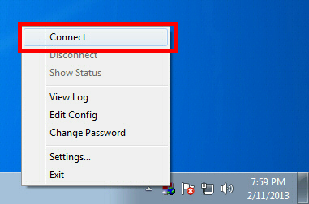
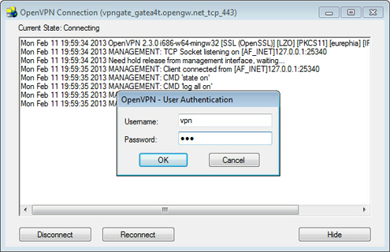

This instruction describes how to connect to a Public VPN Relay Server of VPN Gate by using OpenVPN Client developed by OpenVPN Technologies, Inc. on Windows XP, 7, 8, Server 2003, 2008, 2012.
On this instruction, we use Windows 7 screens. Windows XP and Windows 8 are similar, however there are a little number of differences.
Download and install OpenVPN for windows
Pre-condition: Phone and PC are in the same network (connected to the same WiFi AP)
Steps:
2.1. Phone side: refresh to show the latest servers
2.2. Phone side: start the internal web server, the access address will be: http://xxx.xxx.xxx.xxx:xxx
2.3. PC side: input the above access address in PC browser
2.4. PC side: download one profile to PC
Open "C:\Program Files\OpenVPN\config" folder and remove old OVPN profiles.
Copy new OVPN profile into the folder.
Right click the "OpenVPN GUI" icon on the desktop, and click "Run as administrator".
For WindowsXP or earlier windows version, please double click the "OpenVPN GUI" icon directly.
OpenVPN GUI icon will be appeared on the task-tray of Windows at the bottom-right of the screen. (Icon sometimes hides. Click the up arrow icon to show all hidden icons.)
Right-click the OpenVPN GUI icon, and click "Connect".
The VPN connection will be started. The connecting status will be displayed on the screen.
If you see the username and password prompts on the screen, specify "vpn" (3-letters) on the prompt.
If the VPN connection is successfully established, the message appears as following.
It is better to try the OVPN profile on the phone before share it to PC.